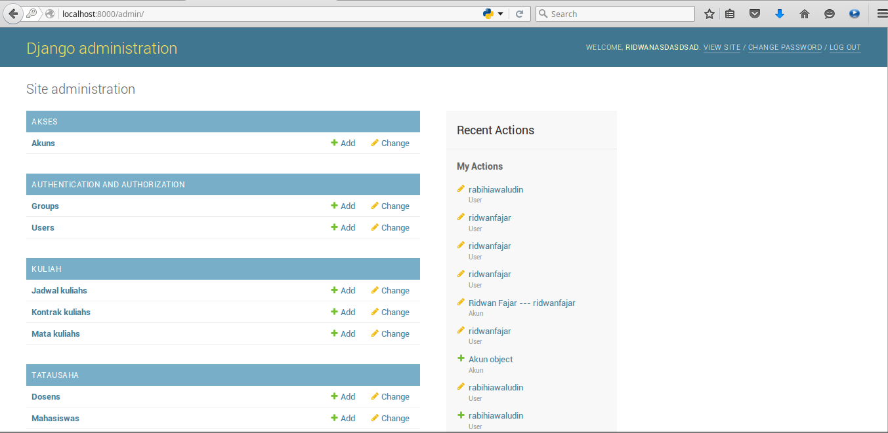
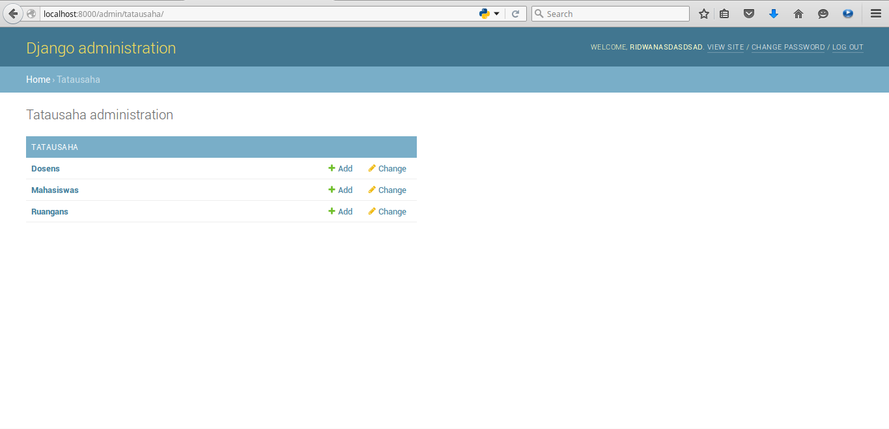
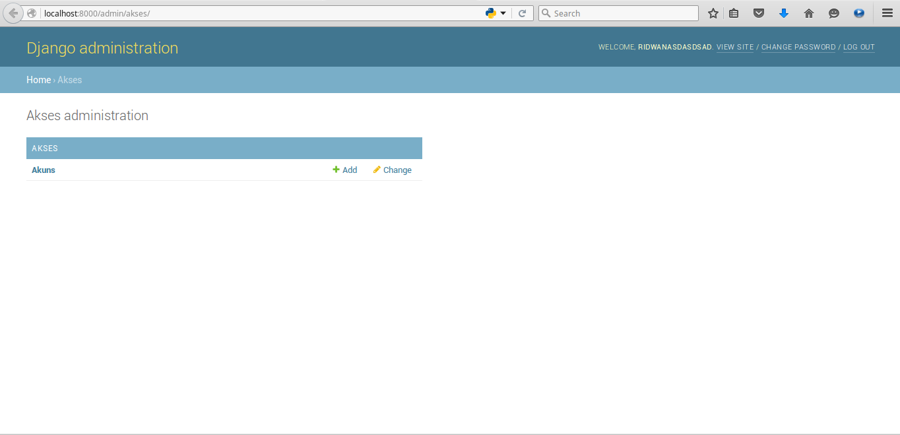
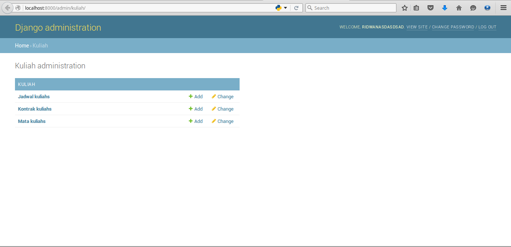

Salah satu komponen yang ada di Django adalah Model. Model adalah sebuah class yang merepresentasikan tabel di database. Karena saat ini Django masih mendukung relational database secara default, Django mendukung database seperti Oracle, PostgreSQL, MySQL, dan SQLite3 tanpa harus memasang lagi package tamabahan. Bila ingin menggunakan database diluar yang didukung Django, Anda harus memasang package yang sesuai untuk database tersebut.
Django akan mempermudah Anda untuk tidak membuat tabel sendiri melalui SQL, cukup dengan membuat class seperti pada modul ini dan voilla, Anda akan mendapatkan tabel yang diinginkan di database yang akan Anda gunakan. Tentunya dengan beberapa tabel bawaan Django dan tabel yang dibuatkan oleh Django. Sehingga programmer hanya perlu fokus untuk mewujudkan bisnis proses dan menentukan model yang baik dan cocok untuk aplikasi web yang dikembangkannya.
Pertama mari kita buat terlebih dahulu beberapa Model di apps tatausaha. Silahkan buat kode berikut di dalam file tatausaha/models.py:
from __future__ import unicode_literals
from django.db import models
# Create your models here.
class Dosen(models.Model):
nama = models.CharField(max_length=200)
alamat = models.TextField(blank=True)
def __unicode__(self):
return self.nama
class Mahasiswa(models.Model):
nama = models.CharField(max_length=200)
alamat = models.TextField(blank=True)
def __unicode__(self):
return self.nama
class Ruangan(models.Model):
nama = models.CharField(max_length=100)
deskripsi = models.TextField(blank=True)
def __unicode__(self):
return self.nama
Kita jelaskan dulu secara garis besar, misal model Dosen, dia mewarisi class Model yang dimiliki oleh modul models. Kemudian di dalamnya terdapat dua field yang eksplisit yaitu nama dan alamat. Field nama dibentuk dengan CharField dengan panjang maksimal 200 karakter, dan alamat dibentuk dengan TextField dan kita akan membolehkannya kosong jika tidak akan diisi. Kemudian ada method _ _ unicode _ _ yang berfungsi untuk mencetak baris tabel dalam bentuk string. Jadi bila nanti kita mencetak objek model maka akan keluar nama dari Dosen yang kita cetak.
Perlu Anda ketahui, bahwa Django membuatkan field id secara otomatis walaupun tidak didefinisikan di dalam models. Jadi Anda tidak perlu khawatir dengan masalah primary key terlebih dahulu. Django pun membuatkan beberapa index secara otomatis, namun kita juga dapat menentukan mana yang harus di-index.
Sekarang kita akan membuat model yang menjadi inti dari aplikasi nilai online kita. kita akan membuat tiga model di apps kuliah ini. Pertama model MataKuliah, lalu JadwalKuliah, dan KontrakKuliah. Di bagian modul ini, Anda akan mulai menggunakan relasi antar model yang merepresentasikan relasi antar tabel. Silahkan buat kode berikut di dalam file kuliah/models.py:
from __future__ import unicode_literals
from django.db import models
from tatausaha.models import *
# Create your models here.
class MataKuliah(models.Model):
nama = models.CharField(max_length=200)
deskripsi = models.TextField(blank=True)
def __unicode__(self):
return self.nama
class JadwalKuliah(models.Model):
nama = models.CharField(max_length=200)
deskripsi = models.TextField(blank=True)
dosen = models.ForeignKey(Dosen)
kelas = models.ForeignKey(Ruangan)
mulai_kuliah = models.TimeField(blank=True)
akhir_kuliah = models.TimeField(blank=True)
mulai_kontrak = models.DateField(blank=True)
akhir_kontrak = models.DateField(blank=True)
tahun = models.IntegerField(blank=True)
def __unicode__(self):
return self.nama
class KontrakKuliah(models.Model):
SEMESTER_TYPE = (
("semester_1","Semester 1"),
("semester_2","Semester 2"),
("semester_3","Semester 3"),
("semester_4","Semester 4"),
("semester_5","Semester 5"),
("semester_6","Semester 6"),
("semester_7","Semester 7"),
("semester_8","Semester 8"),
("semester_9","Semester 9"),
("semester_10","Semester 10"),
("semester_11","Semester 11"),
("semester_12","Semester 12"),
("semester_pendek","Semester Pendek"),
)
jadwal_kuliah = models.ForeignKey(JadwalKuliah)
mahasiswa = models.ForeignKey(Mahasiswa)
nilai_akhir = models.CharField(max_length=2)
semester = models.CharField(max_length=50, choices=SEMESTER_TYPE, default="semester_1")
def __unicode__(self):
return "%s mengontrak %s" %(self.mahasiswa.nama, self.jadwal_kuliah.nama)
Karena disini akan terjadi relasi antar model, maka kita import model yang akan berelasi dengan model yang ada di apps kuliah. Untuk tabel MataKuliah masih mirip dengan model lain di kode sebelumnya. Anda dapat melihat ada ForeignKey di dalam model KontrakKuliah dan JadwalKuliah. Model JadwalKuliah berelasi ke model Ruangan dan Dosen yang ada di apps tatausaha. Sedangkan ForeignKey di model KontrakKuliah bereleasi ke model JadwalKuliah yang berada di apps yang sama dan model Mahasiswa yang berada di apps tatausaha.
Anda juga dapat melihat field lain seperti TimeField, DateField, dan IntegerField. Kemudian ada juga bentuk choices yang nantinya akan menjadi select atau dropdown saat field tersebut ditampilkan di Django Admin. Django sendiri memiliki dua field penting untuk melakukan relasi, yaitu ForeingKey dan ManyToManyField. Anda dapat membaca dokumentasi Django untuk lebih lengkapnya.
Dan terakhir kita akan membuat sebuah model bernama Akun yang menghubungkan user Django dengan data mahasiswa, di dalamnya pun terdapat field yang menunjang untuk keperluan biodata yang dapat diedit oleh mahasiswa. Silahkan buat kode berikut di dalam file akses/models.py:
from __future__ import unicode_literals
from django.db import models
from django.contrib.auth.models import User
from tatausaha.models import *
# Create your models here.
class Akun(models.Model):
mahasiswa = models.ForeignKey(Mahasiswa)
user = models.ForeignKey(User)
no_telp = models.CharField(max_length=50)
alamat = models.TextField()
website = models.CharField(blank=True, max_length=50)
created_at = models.DateTimeField(auto_now_add=True)
def __unicode__(self):
return self.mahasiswa.nama + " --- " + self.user.username
Karena database yang akan kita gunakan sementara ini adalah SQLite3, maka setelah berhasil migrasi, tabel - tabel yang didefinisikan di model akan dibuat di dalam db.sqlite3. Sehingga Anda memerlukan aplikasi client untuk SQLite3 untuk melihat isi database tersebut. Sekarang mari kita migrasi seluru model yang ada di apps - apps yang telah kita buat ke database SQLite3:
$ python manage.py migrate
Setelah berhasil dimigrasi, saatnya kita menyambungkan model dengan halaman Django Admin. Pertama kita sambungkan dulu semua model yang ada di apps tatausaha ke Django Admin. Silahkan buat kode berikut di dalam file tatausaha/admin.py:
from django.contrib import admin
from tatausaha.models import *
# Register your models here.
admin.site.register(Dosen)
admin.site.register(Mahasiswa)
admin.site.register(Ruangan)
Berikutnya kita sambungkan dulu semua model yang ada di apps kuliah ke Django Admin. Silahkan buat kode berikut di dalam file kuliah/admin.py:
from django.contrib import admin
from kuliah.models import *
# Register your models here.
admin.site.register(MataKuliah)
admin.site.register(JadwalKuliah)
admin.site.register(KontrakKuliah)
Terakhir kita sambungkan dulu semua model yang ada di apps akses ke Django Admin. Silahkan buat kode berikut di dalam file akses/admin.py:
from django.contrib import admin
from .models import *
# Register your models here.
admin.site.register(Akun)
Setelah semuanya berhasil disambungkan, maka model siap dikelola melalui Django Admin. Tentunya suatu saat nanti, Anda ingin membuat halaman sendiri tanpa harus melalui Django Admin. Berikut adalah beberapa tampilan ketika models berhasil diintegrasikan dengan halaman Django Admin:




Modul kedua sudah selesai, saatnya sekarang modul ketiga akan beraksi :D.